Brand Identity · Product Design · Wildlife
River & Wing
A self-initiated lifestyle brand concept inspired by Britain's wetlands, bringing wildlife illustration, product design and conservation-led visual communication together.
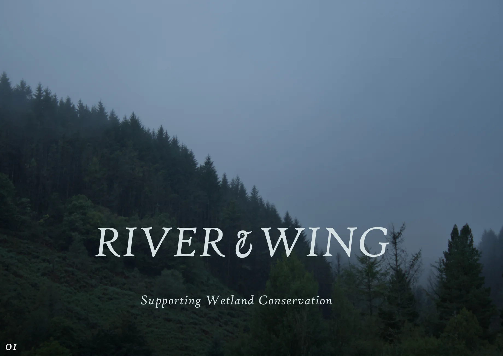
The concept
River & Wing explores how a nature-inspired lifestyle brand could connect everyday products with an appreciation for British wetlands. Distinctive bird species, their colours and habitats inform the identity and product collections.
The concept proposes donating 30% of net profits to wetland conservation and restoration. This is a proposed feature of the fictional brand, not a claim of existing product sales or donations.
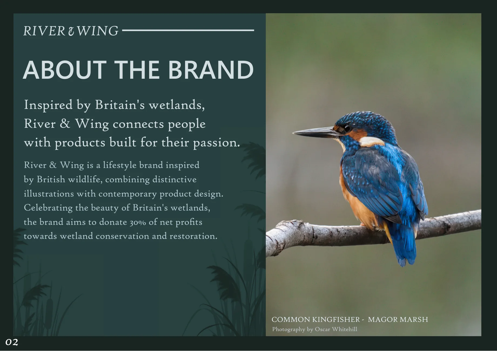
Nature as the design brief
Wildlife photography and observations of wetland environments shaped the brand's visual direction. Bird silhouettes informed the graphic forms, plumage influenced the colour palette, and reeds and waterside habitats influenced the surface patterns.
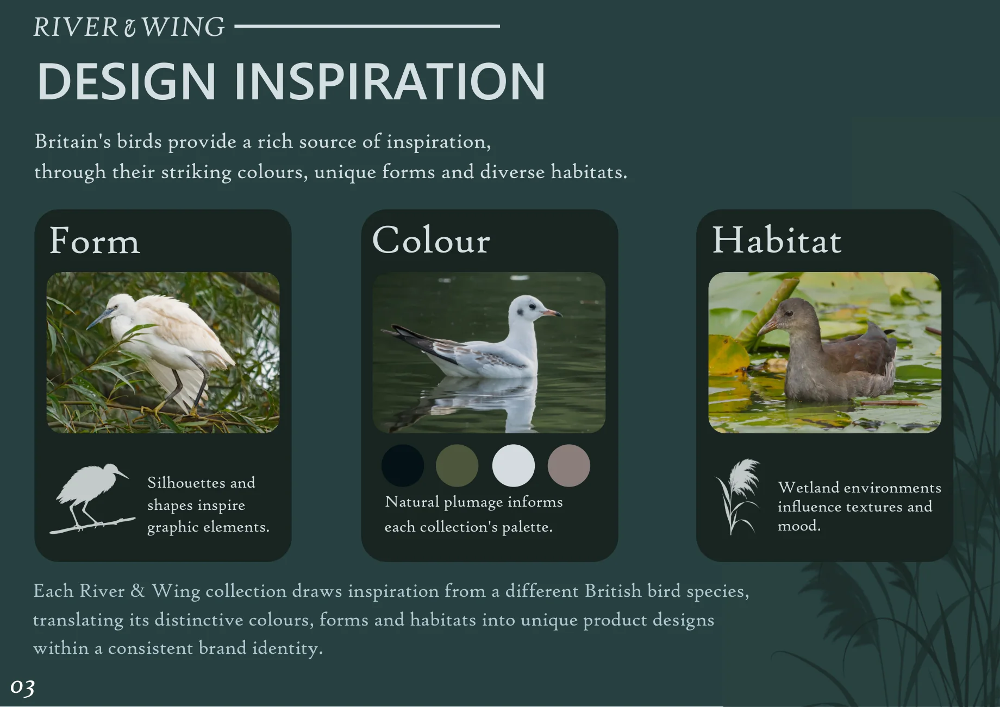
Logo and visual identity
The logo system combines refined serif typography with bird-inspired iconography. Adaptable marks, a muted palette of greens and blues, and complementary type styles help the identity work across packaging, products and digital media.
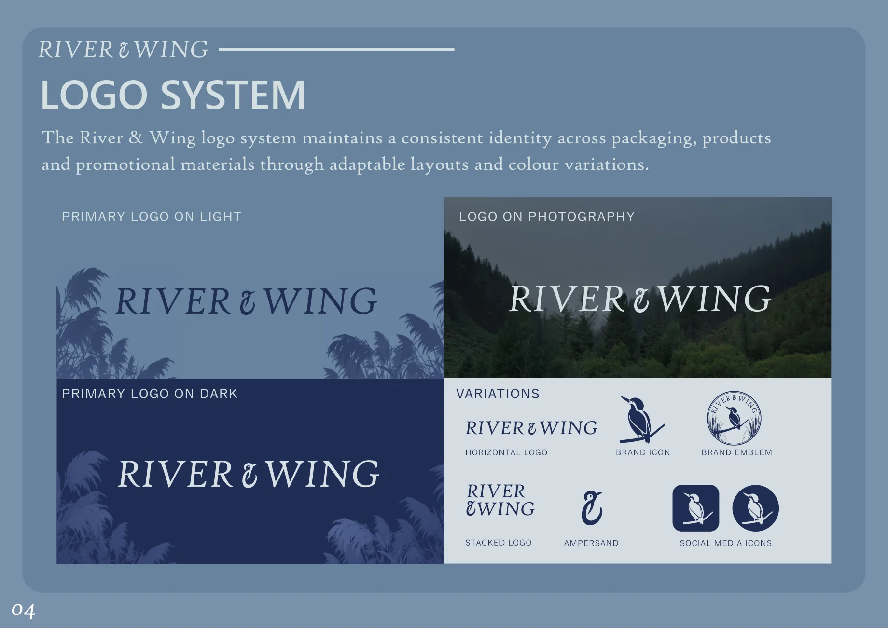
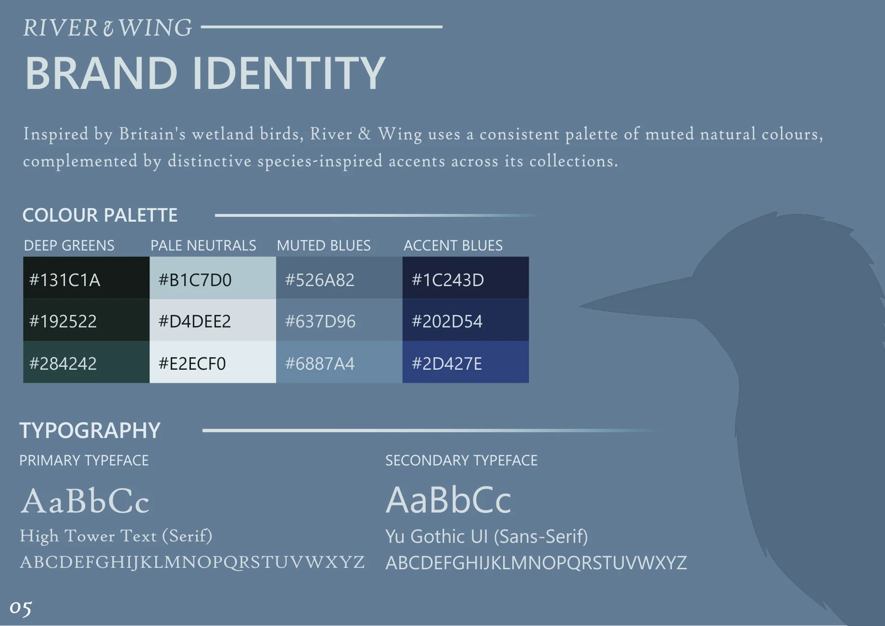
The Kingfisher Collection
A reusable flask brings the identity into a three-dimensional product. I modelled and rendered the flask in Blender, textured it using Substance 3D Painter, and developed the illustrations and surface graphics in Affinity Designer.
The product brings together a muted teal body, orange-and-blue kingfisher artwork and layered reeds that wrap around the surface to reference the species' habitat.
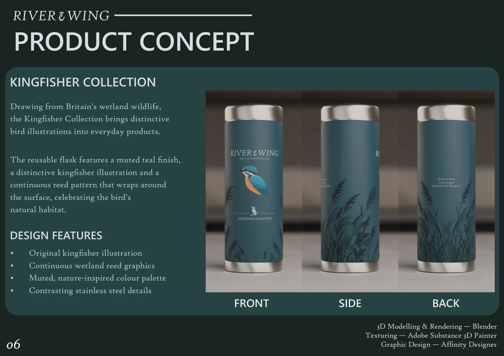
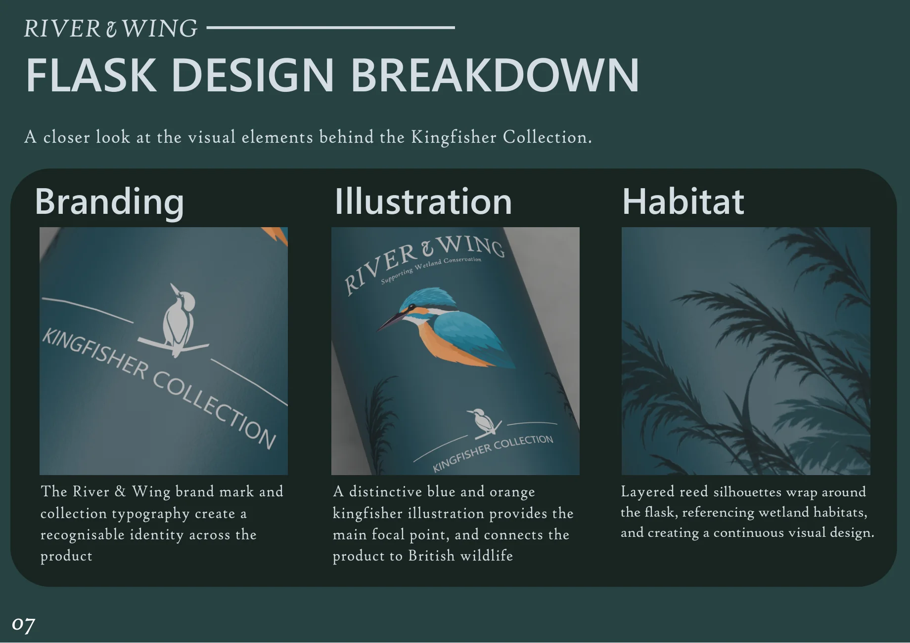
Print advertising
Two advertising concepts extend the identity beyond the product. One focuses on the proposed conservation contribution; the other combines the 3D flask renders, wildlife photography and collection branding to communicate the product itself.
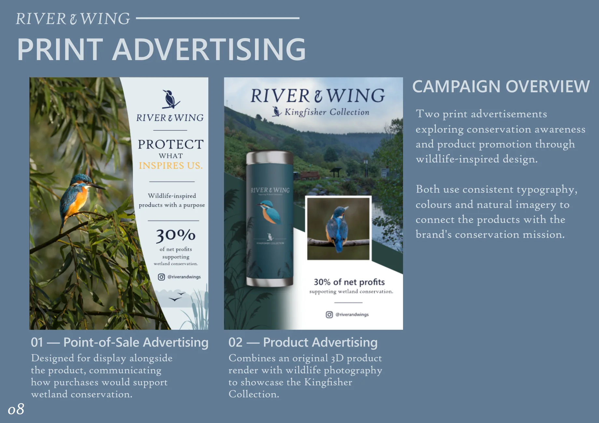
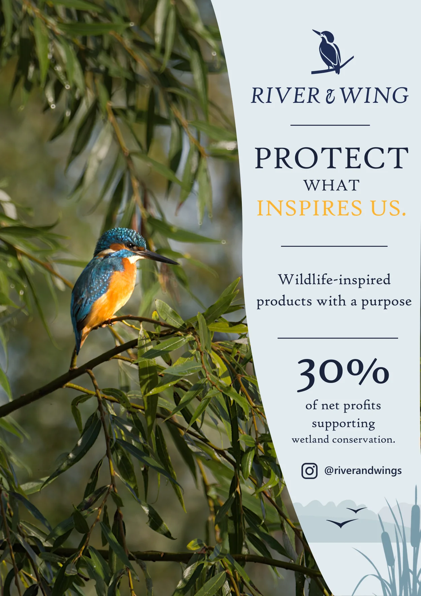
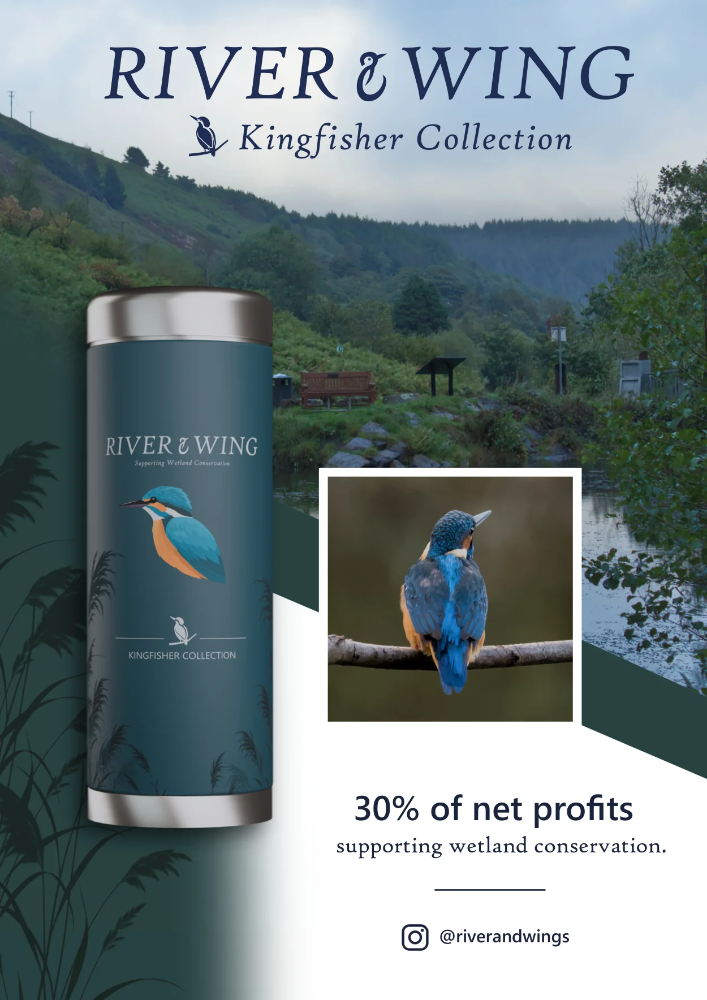
Social media campaign
The print campaign was adapted into Instagram-style posts with consistent messaging, wildlife imagery and calls to action. The aim was to keep the brand recognisable while presenting both its conservation purpose and the Kingfisher Collection.
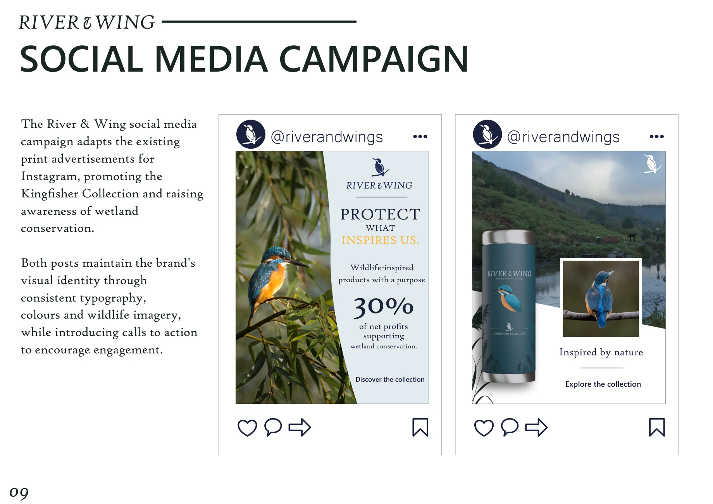
Project scope
Brand identity, layout design, product illustrations, 3D modelling, texturing, renders and promotional graphics were developed for this independent concept. Wildlife photography includes original and permission-granted imagery. The brand and social handles are conceptual, not a live business or campaign.
← Back to selected projects